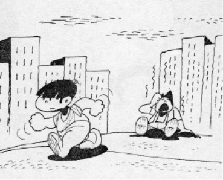
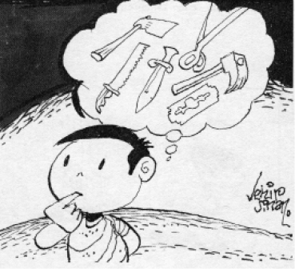

İlkokula başlama yaşını öğrenebilmek için test yaptırmaya gerek var mı?
Gerek yok.
Normalde 72 ayını tamamlayan çocuklar ilkokula başlar.
Hele daha önce anaokuluna verdiyseniz zaten okula hazır demektir.
Ancak çocukla ilgili şüphemiz, endişemiz varsa bir uzmana danışmakta fayda vardır.
Baba, anneye karşı nazik, kibar değilse ve sevgisini göstermiyorsa; anne ilgisiz ve sevgisiz kaldığına inanıyorsa, çocuklara karşı yeterince faydalı olabilir mi?
Olamaz tabiî. Anne-baba arasındaki uyum, karşılıklı sevgi ve saygı inanın çocuğa çok şey katar. Bunu sağlamak zorundasınız.
Eşimi 1 yıl önce kaybettim. 6 ve 10 yaşında iki oğlum var. İyi bir anne olduğuma inanıyorum. Babanın yerini nasıl doldurabilirim?
Allah size sabır ve güç versin. Bunun için anlayışlı bir beyle evlenebilirsiniz. Evlenmenin dışında büyükbaba, amca, dayı gibi ailenin erkek büyüklerine yakın oturmak, onlarla sık görüştürmek faydalı olur. Böylelikle taklit edecekleri bir erkek modeli görürler.
Bir başka husus da okulda erkek öğretmene çocukları vermeniz. Bu da “model olma” yönüyle iyi olur.
Çocukların gece altını ıslatmaları, anne-baba eğitimi yanlışlığından mı olur?
Hayır. Genellikle kalıtsaldır, soyaçekimle ilgilidir.
Ancak çocuk bir süre temiz kaldı ve sonra altını ıslatmaya tekrar başladıysa, bu defa psikolojik faktörler söz konusudur. Ya çocukta anne-babayı kaybetme korkusu veya kıskançlık duyguları mevcuttur.
Babanın çocuğa sürekli kendini överek örnek göstermesi, “Ben senin yaşındayken çok çalışkandım. Ben bu imkânlara sahip değilken şöyleydim” gibi sözler söylemesi ve onu tembellikle suçlaması doğru mudur?
Kesinlikle yanlıştır. Çocuğa fayda yerine zarar verir.
Her çocuğu kendi şartları içinde düşünmek gerekir. Böyle, onu kendimizle kıyaslayarak aşağılarsak bir süre sonra kendine güvensizlik geliştirecektir.
6 yaşındaki kızım, 4 yaşındayken gece altını ıslatmayı kesmişti. Son 4 aydır tekrar gece kalkmaya ve altını ıslatmaya başladı. Ne yapmalıyız? Sebebi ne olabilir?
Çocuğun kafasında büyüttüğü bir problemi vardır. Bunu araştırmalıyız. Acaba aileye yeni bir kardeş mi geldi? Başka endişeleri mi var?
Bu konularda onu rahatlatırsak problem çözülmeye başlar. Ayrıca akşamları sulu gıdalar almasını kısıtlamak, altına bez ve naylon sermemek, idrarını kaçırdığı günleri listelemek ve temiz olduğu günler ona memnuniyetimizi bildirmek faydalıdır.
6 yaşındaki oğlumu çok seviyorum, ancak işsizim. İstemeyerek sıkıntımı ona yansıtıyor ve bağırıyorum, dövüyorum.
İnanın, ismi üzerinde, çocuk bu. Çok bağırmaktan, hele kaba kuvvet uygulamaktan kaçınalım. İnşallah iş bulur ve hayatınızı düzene sokarsınız. Olmazsa bir ruh hekimine görünmenizde fayda vardır.
Çocuğumun her istediğini ve onun için en iyisini yapıyorum. Yine de asabi ve bazen huzursuz.
Aslında arada onun isteklerine “hayır” demeliyiz. Her istediğini yapmak doğru değil. Böylelikle çocuğunuzun tatminsiz ve doyumsuz olmasına sebebiyet veririz. Çocuk, elindeki nimetlerin farkına varmaz. Hayatta da her istediğinin eline geçeceğini zanneder. Öyle olmadığını görünce mutsuz olur.
6 yaşındaki çocuğum çok ısrarcı. “Hayır” desem bile tepkili konuşuyor. İstediği yapılsın istiyor.
Israr etse bile yapılmayacak şey istiyorsa, yapmayın! Çocuk bilsin ki, ısrar fayda vermeyecektir. Böylelikle zamanla ısrardan vazgeçecektir.
5 yaşındaki oğlum, markette istediğini almayınca bağırıp çağırıyor. Almak zorunda kalıyoruz. Yoksa çevreye rezil olacağız.
Yaptığınız yanlış. Çocuk sizi mahcup ederek istediğini aldırmaya çalışmaktadır. Alınmayacak istek de bulunduğunda kesinlikle reddedin. Kendini yere atsa da, bağırıp çağırsa da kabul etmeyin. Bir süre sonra bu alışkanlığı bırakacaktır.
Çocuğun istediğini yerine getirmezsek sürekli ağlıyor. Ne yapmalıyım?
Ağlasa da istediğini yapmayın. Ağladığını görmezden gelin. Bilsin ki, ağlasa da istediği olmayacaktır.
Anne adayının kullandığı içki ve sigara, doğacak çocuğa etki yapar mı? Vuku bulan bu olumsuz etki, ona yapılan bir haksızlık değil mi?
Tabiî pek çok zararlara yol açar. Sigara içen annelerin bebekleri:
a) Daha düşük kilo ile…
b) Hastalıklara daha kolay yakalanma riski ile ve
c) Öğrenme yeteneğinde eksiklikle doğarlar.
İçki içen annelerin bebekleri de birçok rahatsızlıklarla karşı karşıyadırlar.
Bu elbette annelerin kendi evlatlarına yapacakları büyük bir haksızlıktır.
6 aylıkken parmak emmeye başlayan oğlum 2 yaşında, ama devam ediyor. Normal midir?
Arada yaparsa normaldir. İkna ve telkinle vazgeçirmeye çalışabilirsiniz, ama zorla ve yasakla problemin çözülmeyeceğini bilin.
3 yaşındaki kızım devamlı sallanıyor. Ne yapmalıyım?
Bence görmezlikten gelin. Üstüne düştükçe, yasakladıkça daha çok yapacaktır.
Sallandığında ilgilenmeyin, yapmadığında üzerine düşün. İlginizi çekmek için yapıyor olabilir veya sallanan birini taklit ediyordur.
Çocuğun ruh sağlığı açısından anne-baba geçimsizliği söz konusu ise, ayrılmaları mı daha doğru olur?
Bu geçimsizliğin şiddetine bağlı olan bir durumdur. Eğer aralarında sağlıklı iletişim ve sevgi kalmadıysa, devamlı birbirlerini çocuğun yanında aşağılıyorlarsa, anlaşıp ayrılmaları uygun olabilir.
Yeni evlenen bayanım. Eşim, ailede çok çocuğun daha doğru olacağını söylüyor. Acaba en uygunu kaç çocuktur?
Tabiî çocuk sayısı ailenin şartlarına, anne-babanın istekli oluşlarına göre değişir. Ancak çocukların ruh sağlığı açısından üç veya dört kardeşin en uygun olduğunu düşünüyorum. Kardeşlerin olması, birbirleriyle arkadaş olmalarını ve dayanışmalarını sağlayacaktır.
Yeni evli bir çiftiz. Ne zaman çocuk sahibi olmalıyız?
Çocuk sahibi olabilmek için karı-koca birlikte karar vermeli ve buna hazır olmalıdır. Hazır olmak derken, etkili ebeveyn olmayı ve iyi yetiştirmeyi kast ediyorum.
Çocuk sahibi olmayı da geciktirmeyin. En fazla bir yıldan sonra düşünün. Çocuktan sonra aile olduğunuzu hissedecek ve daha mutlu olacaksınız.
Çocuklar aralarındaki yaş farkı ne olmalıdır?
İki hamilelik arasında en azından iki yıl olması uygundur. Özellikle çocuklar arasında 3 yaş fark varsa, hem kıskançlık asgariye iner, hem de kardeşler birbirleriyle arkadaşlık yapıp oynayabilirler. Ayrıca anne için zorluk fazla olmaz.
Çocuğumuzun zekâ gelişimine nasıl katkıda bulunabiliriz?
• Hamile anne adayı sağlığına ve beslenmesine dikkat etmeli; sigara, içki ve uyuşturucudan kaçınmalıdır. Yine stres ve sıkıntıdan uzak, mutlu ve huzurlu bir hamilelik dönemi geçirmelidir.
• Bebeği anne yanında taşımalı ve devamlı onunla iletişime girmeli, değişik ortamlara sokmalıdır.
• En az 6 ay, en iyisi 2 yıl anne sütü almalıdır.
• Anne ve baba bebekleriyle içlerinden geldiği gibi konuşmalıdır.
• Sabah ve akşam aile sofrada buluşmalı, yararlı sohbetlere çocuk da katılmalıdır.
• Çocuklara her gün bir süre uygun kitaplar okumalıyız.
• Oyun oynamasına uygun ortam oluşturmalı, zihnini geliştirecek iyi oyunlar seçmeliyiz. Bazen oyununa katılmalı, onunla oynamalıyız.
• Oyuncaklar beyin geliştiren türde olmalıdır. İleri teknoloji ürünlerinden kaçınmalıyız.
• Okula iyi bir başlangıç yapmalı, derslerine her zaman öncelik vermeliyiz. Okul günlerinde dersleri tüm diğer faaliyetlerden daha önde geliyor olmalıdır. Hafta içlerinde ender televizyon seyretmeli, ev ödevlerini muhakkak yapmalıdır.
5 yaşındaki çocuğum markaların logolarını tanıyor, televizyondaki şarkıcıların isimlerini biliyor. Bu onun ruh sağlığının yeterli olduğuna ve aklına işaret midir?
Bunları çocuğun akıllı olmasıyla ilişkili sayamayız. İyi bir ruh sağlığına sahip olmak; yaşa uygun becerileri (yürümek, konuşmak gibi) kazanmış olmayı gerektirir. Daha sonra arkadaşlık etme, ana-baba ile bağlılık ilişkisi kurma, ama aynı zamanda onların yokluğuna tahammül etmeyi sayabiliriz.
1,5 yaşındaki oğlum herkesi ısırıyor, çimdikliyor. Benim saçlarımı çekiyor. Ne yapmam lazım?
Aslında çocuk böyle yaparken eğleniyor, kendi gücünü göstermekten memnuniyet duyuyordur. Başkaları çığlık attıkça mutlu oluyordur. Yoksa karşısındakinin acı çekmesini amaçlamadığı gibi, büyük ihtimalle onun acı çektiğinin farkında da değildir.
Bu durumda sizin veya acı çekenin, acı çektiğini çocuğa fark ettirmesi, canının yandığını ifade etmesi gerekir. Çocuk, karşısındakini rahatsız ettiğini böylece anlar ve acı çektirmekten vazgeçer.
Bazılarının yaptığı gibi hemen şaplak atmak yanlıştır.
4 yaşındaki oğlum rahatsızlık geçiriyor, iğne yapılması uygun görüldü. Ama o yaptırmak istemiyor, çok ağlıyor. Ne yapmalıyım?
İğnenin yapılması gerekiyorsa korkuyor diye vazgeçmeyelim. Ne uygunsa yapalım. Ayrıca yalana başvurmayalım.
Oğlum rahatsızdı ve kendisine iğne yapılıp yapılmayacağını sordu. “İğne yapılacak, bu senin sağlığın için. Mecburuz buna” diye izah ettim. Kararlı olduğumu gördü ve tepkide bulunmadı.
Bazı anneler, çocukları ağlayınca iğneden vazgeçerler. Bu cesaretin değil, korkunun ödüllendirilmesi anlamına gelir. Hâlbuki çocuğa karşı kararlı davranmalı ve ortalığı ayağa kaldırsa da iğnesi yapılmalıdır. Yoksa çocuğumuz her korku veren durumda ağlayarak ve bize koşarak tepki vermeyi alışkanlık haline getirir.
4 yaşında kızım sofrada yemeği ile oynuyor ve çok oyalanıyor. Ne yapmalıyım?
Yemek aralarında bir şey yemediğinden emin olmalısınız. Sofraya besleyici yiyecekleri koyduktan sonra istediği tempoda yemesine izin verelim. Bizler yemeği bitirince yemek vaktinin bittiğini söyleyerek sofrayı toparlayalım. Yemeği bitirmediğini belirterek karşı çıkarsa ona “Üzgünüm, ama yemek için ayırdığımız zaman sona erdi” diyerek kararlı olalım. Bir dahaki öğünde daha dikkatli olacaktır.
Küçük kızım gece lambası ile uyumayı seviyor. Babası “Kaldıralım, artık büyüdü” diyor.
Çocuk gece lambası ile uyumayı seviyorsa karışmayalım. Bırakalım o şekilde mutlu uyusun. Bunun ona bir zararı yoktur.
4 yaşındaki oğlum inatlaşıyor ve sözümü dinlemiyor. Dövmemek için kendimi zor tutuyorum.
Bu yaştaki çocuklar kendilerine söylenenleri pek dinlemezler, doğal gelişimlerinin parçasıdır. Tokat atmayı aklınıza bile getirmeyin. Ancak olumlu davrandığında teşvikçi olun.
5 yaşındaki oğlum arkadaşlarının evinden ceplerinde oyuncaklarla dönüyor. Sorduğumda “hediye” diyor veya bulduğunu söylüyor. Ne yapmalıyım?
Ona inanmadığımızı söyleyelim ve nereden aldığını araştıralım. Arkadaşınınsa hemen iade edelim. Değilse, “Bu oyuncaklar senin değil biliyorum. Onun için bunlar bende kalacak” diyelim. Elinden alalım ve saklayalım. Bu yöntemi yeterli bir süre uygularsak, er geç bu huyundan vazgeçecektir.
5 yaşındaki çocuğumuza ne kadar televizyon seyrettirebiliriz?
Çocuklar için hazırlanmış eğitici ve eğlenceli programları izletebiliriz. Ancak onu oyalayacak diğer oyuncakların sayısını artırmak daha faydalıdır. Tahta bloklar, logolar, plastik askerler, bebekler, kalem, pastel, suluboya gibi malzemeleri olursa daha az televizyon seyredecektir.
Aslında televizyon çocuğumuzun kelime hazinesine ve konuşma yeteneğine olumlu katkıda bulunur. Okuma, matematik, tarih ve mantıklı düşünceyi televizyon sayesinde daha kolay öğrenebilir. Ancak dozunda ve uygun programlarla böyledir.
5 yaşındaki kızım cinsel organı ile oynuyor. Ne yapmalıyım?
Bazı küçük çocuklar sık sık cinsel organı ile oynayabilirler. Bu durumda eline vurup, “Sakın elleme, pis” dersek bu fiili bir tabu haline getirmiş oluruz. Bu yanlıştır ve tehlikelidir. Hiçbir şey yokmuş gibi davranmak en doğrusudur. Çünkü çocuk dirseğini veya kulağını kaşıdığı cinsel organı ile oynamaktadır, arada fark yoktur. Ama dikkatini biz buna yöneltirsek saplantı haline gelebilir.
Yoksa yetişkinlerin anladığı bir cinsel anlayışla bunu yapmaz. Sinir uçları duyarlı olduğu için genel olarak hoş bir algılama yaşar. Ama bu duygu, olgun bir yetişkinin yoğun, heyecan verici duygusu değildir. Çocuk ancak 11-12 yaşında yetişkinlerin bakış açısına kavuşur.
4 yaşındaki oğlum herkesin önünde pipisini tutarsa ne yapmalıyım? Rahatlıkla yapabileceğini söylesem hoş olmayacak.
Tabiî ki hoş olmaz. Ancak bunu kötü ve yanlış olduğunu söylersek bu sefer cinselliği kötü algılayabilir veya bu fiil daha çok ilgisini çekebilir. Bunun yerine, herkesin önünde her şeyi yapamayacağımızı söyleyelim ve eve gidince pipisini tutabileceğini de ekleyelim.
5 yaşındaki oğlumun yalnız kalmama, aileden ayrılmama, özellikle annesinden uzak duramama gibi huyu var. Nasıl değerlendirirsiniz?
Bunu kırmak lazım... Bu arada, kısa süre aile büyüklerinin yanına bırakmayı deneyin. Yine anaokuluna gönderin.
Çocuklarla ilgili sınırlamalarda nasıl davranmalıyız? Mesela televizyon seyretmek istiyor, biz istemiyoruz. Cebren engelliyoruz. Doğru mu?
Bu konuda otoriter olun. Yani sınırlama koyun ve bu saatlere uymasını sağlayın. Çocuk disiplin altında olduğunu hissetmeli. Çok seyrek olarak, uygun program olduğunda müsamahalı olsanız da, “genel sınırlamalar uygulanmalı” derim.
Çocuklarımızı kaç yaşında yuvaya vermeliyiz? Dinî eğitimli bir yuva çocuklar için kaç yaşından sonra olmalı?
Anne çalışmıyorsa 3-6 yaşlarında, daha iyisi 4-6 yaşlarında verilebilir.
4 yaşında kızım aşırı derecede sinirli ve her konuda ağlıyor. Büyük abdestini söylemiyor. Sebebi ne olabilir?
Acaba ailede bir huzursuzluk mu var?
Yoksa anne olarak siz bu aralar sinirli ve gergin misiniz?
Çocukta evdeki bir problemin yansıması vardır. Olmazsa bir uzmana danışın.
6 yaşındaki oğlumda gece hafif alt ıslatma sorunu var. Doktora başvurduk, anormal bir şey görmedi. Acaba psikolojik olabilir mi?
6 yaşı büzücü kasların bazen gelişmesini tamamladığı zamandır. Bu yüzden endişe etmeyin ve bir süre daha bekleyin. Problem genelde kalıtımla yani soyaçekimle ilgilidir.
Çocukta vicdan gelişimi kaç yaşında olur?
Herkes çocuğunun yanlışla doğruyu ayırabilmesini; dürüst, düşünceli ve başkalarına saygılı olmasını ister. Çünkü toplum içinde yaşamanın yolu budur.
İşte vicdan dediğimiz bu duygu, altı yaş civarında şekillenmeye başlar. Yalnız bu yaşta bile yanlışla doğruyu ayırma duygusu tam oturmamıştır. Vicdan, çocuğun özümsediği ahlak ölçütlerinden oluşur. Ancak, çocuğun üzerinde esas etkili olan bizimi tutum ve davranışlarımızdır.
Söylediklerimiz ve nasihatlerimiz daha az tesirli olur. Bu yüzden anne-babası başkalarına karşı ince, düşünceli ve dürüst olan çocuk da onları taklit edecektir.
Çocuğum bazen yalana başvuruyor, dersini yapmadığı halde “yaptım” diyor.
Çocuklar da yetişkinler gibi, ya soruna batmamak için veya sorumluktan kaçmak amacıyla yalan söylerler. Çocuğumuz henüz tamamlanmadığı halde ev ödevimizin bittiğini söyleyebilir. Çünkü ödevini bitirmeden televizyon izleyemeyeceğini bilir. Dürüstlüğün en iyi meziyet olduğunu anlamalıdır.
Onun sözlerine güvenebileceğimizi bilmenin, aramızdaki ilişkiyi sağlamlaştıracağını açıklayalım. Hep ona gerçekçi davranalım. Verdiğimiz sözleri tutalım.
Çocuğum 6 yaşında. Okumayı nasıl sevdirebilirim?
Okumaya başlamak da tıpkı yürümeyi öğrenmek gibi gelişmelere tâbidir. Çocuğun erken okumayı sökmesi daha iyi bir okuyucu olmasını sağlamaz. Önemli olan bizim ona verdiğimiz destektir. Bunun için:
• Her gün sesli okuma vaktimiz olsun. Onunla birlikte kitap okuyacağımız on beş dakika bile onun için oldukça vakit sağlayacaktır. Söz gelimi gece uykuya dalmadan önce hikâye okumayı alışkanlık hale getirmemiz iyi bir okuyucu olmasında yararlıdır.
• Okurken kendimize rahat bir ortam oluşturmalıyız.
• Evimizde kitaplık bulunmalıdır.
• Çocuğumuzla kütüphaneleri ve kitapçıları dolaşalım. Onu kitap fuarlarına götürelim. Sevdiği kitaplardan alalım.
• Kitaplar hakkında onunla sohbet edelim. Kitabın konusunu tartışalım.
• Kelime haznesini geliştirecek oyunlar oynayalım.
• Kitap okumanın yararlarından bahsedelim.
4 yaşındaki oğlum yemek seçiyor, makarna ve pilavla patates kızartmasından başka bir şey yemiyor.
Tek yönlü beslenmek, özellikle büyüme yaşındaki çocuklar için zararlıdır. Bir de buna ömür boyu sürecek yanlış beslenme alışkanlıklarının belirme tehlikesi de eklenirse durumun vahameti anlaşılır. Bunu yenmek için:
• Çocuğumuzun yanında çeşitli değişik besinler tüketerek ona örnek olalım.
• Tabağına bir kaşık sebze koyalım ve tatmasını tavsiye edelim.
• Makarnayı seviyorsa çeşitlerini, renklerini onunla beraber yaptığımız soslarla zenginleştirelim.
• Yemeğin daima üç ana besinden (et yani protein, yağ ve karbonhidrat) oluştuğunu anlayacağı dilden izah edelim.
• “Hiçbir şey yemiyor”, “Yemek seçiyor” gibi etiketlemelerden kaçınalım.
6 aylık bir bebeğimiz ve 7 yaşında bir kızımız var. Kardeşi doğduğundan bu yana kızımda hep bir korku var. Anneme bir şey olacak korkusu. Yalnız yatmak istemiyor. Bir yere giderken hep beraber olalım arzu ediyor. Anneannesinde dahi kalmak istemiyor. Sebebi ne olabilir?
Burada belki doğumun tehlikeli olduğuna dair bir sohbete kulak misafiri olmuştur. Ayrıca yeni gelen kardeşini de kıskanıyor olabilir. Sanki ondan ayrılırsa annesi kardeşiyle yetinecek ve kendisi devre dışı kalacak zannına kapılabilir.
Kendisine her şeyin yolunda olduğunu izah edelim ve korkusunu aşması için yardımcı olalım.
Anne-babanın çocukların yanında elbise değiştirmesi uygun mudur?
Değildir. Çocuğumuz, herkesin mahremiyeti olduğunu bilmeli, buna alışmalıdır. Yatak odamıza girerken kapıyı çalıp izin almayı öğrenmelidir.
Çocuklarımıza arkadaş gibi yaklaşınca bir süre sonra suiistimal tehlikesi beliriyor. Acaba biraz korkmaları gerekmez mi? Çok arkadaşça davranmak yanlış mı?
Arkadaşça yaklaşmak demek, bize problemlerini rahatça açabilmesi anlamındadır. Yoksa elbette otoritenin bizde olduğunu bilmesi ve hissetmesi gerekir. Her istediğini yapamayacağının bilincinde olmalıdır. Uyması gereken kuralların olduğunu, bunu da anne-babanın sağladığını kavramalıdır.
Gece korkan ve yalnız yatmak istemeyen çocukla birlikte yatmak doğru mudur? Bu korkusunu nasıl yenebiliriz?
Korkan çocuğu yatağımıza alırsak, onu bu korkudan ötürü ödüllendirmiş oluruz. Bunun yerine biz onun yatağına gidelim ve uyuyuncaya kadar yanında duralım. Zamanla da yalnız yatmaya alıştıralım.
Ona korkusunu anladığımızı ve yanında olduğumuzu, her an bize ulaşabileceğini izah edelim. Odasına gece lambası koyalım.
5,5 yaşındaki oğlumuz eve misafir gelince ve başka yere gittiğimizde bambaşka oluyor. Kesinlikle söz dinlemiyor.
Herhalde başkalarının yanında fazla hoşgörülü davranmanız buna yol açmış. Muhakkak mahcup oluruz, diye her istediğini yapmayalım ve her zaman tutarlı olalım.

2 yaşındaki kızım arada, kuytu bir yere gidip bezini çıkarıyor ve edep yerine elini sokup oynuyor. Ne yapmalıyım?
Gördüğümüzde hiçbir şey yokmuş gibi davranalım, yasak koymayalım. Ayrıca onu meşgul edelim. Elden geldiğince oyalayalım. Zamanla geçecektir.
5 yaşında bir oğlum var. Sürekli kendisinin çok güçlü olduğunu, herkesi yenebileceğini söylüyor. Alparslan, Kara Murad gibi güçlü kişilere karşı hayranlığı var. Bunun kişiliğine olumsuz etkileri olur mu?

Hayır olmaz. Aksine çocuğun normal gelişiminin bir parçasıdır bu durum. Endişelenmenize gerek yok.
Kardeşi olmayan bir çocuğun kardeş ihtiyacını nasıl karşılamalıyız?
Kuzenleriyle daha sık görüştürebiliriz. Olmazsa komşu çocuklarından arkadaş edindiriniz. Yaşı gelince anaokuluna veriniz.
Kardeşler arasındaki münakaşalarda anne ve babanın tavrı nasıl olmalıdır?
Çocuklarımız birbirleriyle didişip çekiştiklerinde, çoğu zaman kimin haklı olduğunu, problemi hangisinin başlattığını anlayamayız. Bu durumda konuyla ilgilenmemek en iyi tavırdır. Böylelikle kendi problemlerini kendilerinin çözmesi sağlanacaktır.
Yine aralarında taraf tutmamız yanlıştır. Şiddete başvurmalarını da kesinlikle engellememiz gerekir.
Çocuğu cezalandırma yöntemleri neler olmalıdır? Özellikle dayak ve odaya kapatma ne derece doğrudur?
Ona kızgınlığımızı ve yaptığının tasvip edilmediğini belirtmekle başlayabiliriz. Ayrıca sevdiği faaliyetlerden alıkoymak (dışarı çıkmaktan veya televizyon seyretmekten) gibi odaya bir süre kapatmak da yine ceza metotlarıdır.
Nadir durumlarda, kaba yerine vurulacak şaplak da bazen çok işe yarayabilir.
6 yaşında kız çocuğum var. Babanın evde kalıp çocukla ilgilenmeye vakti yok. Pazar günü kızımı babayla iş yerine göndersem doğru olur mu?
Şahane olur. Babasıyla baş başa geçireceği haftada bir gün de olsa, çocuk bundan çok şey kapar. Tabiî babası iş yerinde yoğun değilse ve çocukla ilgilenecekse…
Yeni doğan bebeği annesinin yanında mı tutmalı? Yoksa bebek odalarına mı götürmeli?
Bazı doğumevlerinde bebekler, hastalık kapmasınlar diye, annelerinden uzak, bebek odalarında tutulurlar. Oysa bunun tam tersi doğrudur. Bebek, annesinden aldığı antikorlarla dışarıdan gelecek mikroplara karşı savaşmanın yanında, bebek odalarında bulamayacağı özel ilgi ve sevgiyi annesinden görür. Annesinin yanında yatan bebek, vücut ısısını, metabolizmasını, hormon ve enzim seviyesini, kalp ritmini ve nefes alış verişini dengeler. Anne ve bebeğin birbirinden ayrılması fiziksel yoksunluklara ve duygusal boşluğa sebep olur.
Çünkü anne-bebek ilişkisi karşılıklı, iç içe ve büyülüdür. Bebeğin ağlaması, yeryüzünde bebekler için en iyi besin olan anne sütünü tetikler. Doğumdan sonra emzirmek, plasentanın atılmasına yardımcı olduğu gibi, annenin kanama geçirmesine de engel olur. Ayrıca bebeğin bakışları ve dokunuşu annelik için gerekli duygu ve melekelerin oluşmasını sağlar. Bebekler, annelerinin sesini duymalı, kokusunu hissetmeli, uyku düzenini ve yüz ifadelerini öğrenmelidir. Annelerinin iyi ve sağlıklı olduğunu, yanında bulunduğunu görünce kendine güvenleri artar, daha huzurlu ve mutlu olurlar.
3 yaşındaki oğlum yeni doğan kardeşine vurmaya kalktı. Nasıl davranmalıyım?
Bebeğe vurmasının asla izin verilmeyerek bir davranış olduğunu ısrarlı ona anlatalım. Bebeğin canını acıttığını, ailede başka hiç kimsenin böyle yapmadığını söyleyelim. Çok ciddi olduğumuzu belli edelim, fakat sakinliği elden bırakmayalım. Ancak böyle kararlı, sert bir tavır takınırsak şiddet olayları sona erer.
Çocuğumuzun bu şiddet dolu davranışının amacı dikkatimizi çekmektir.
Bu sebeple “Tamam, seni anlıyorum, sinirlendin demek. Gel, seninle oynayalım” şeklinde bir tepki gösterirsek, bu tip davranışlarını teşvik etmiş oluruz. Ona sevgi ve özen gösterelim, ama daha sonra.
Kız çocuğuna büyük hevesim vardı. Fakat üç oğlum oldu. Ve en küçüklerini kız gibi yetiştirerek hevesimi alıyorum. Tabiî ki erkek, ama ona “kızım” diye hitap ediyorum. “Ama bir zarar veririm” diye de korkuyorum. Yaptığım yanlış mı?
Tabiî ki kesinlikle yanlış… Ergenlik yıllarında onu kız-erkek karmaşasına itecek davranışlarınız var. Lütfen erkek çocuğunuzu erkek gibi büyütün. Yoksa ileride çocuğunuzda mutsuzluk ve cinsel belirsizlik ortaya çıkar.
Ona verdiğimiz isimden, giydirdiğimiz kıyafete kadar kendi cinsine uyacak şekilde hareket etmeliyiz.
3 yaşındaki oğlumu geçen bebekle oynarken gördüm, şok oldum. Ne dersiniz?
Çok erken dönemde, çocukların erkek oyunları ve kız oyunları vardır. Bu onların cinsel kimliklerini belirterek büyümelerine yardımcı olur. Ama oğlumuz oyuncak bir bebekle veya kızımız arabalarla oynamak istiyorsa şaşırmayalım. Her yaşta, bir çocuğun erkeklere ve kızlara has şeylerin keşfini yapmaya ihtiyacı vardır. Bu normaldir ve endişe verici değildir.
Ancak başka belirtiler de var ve çok tedirgin oluyorsak bir uzmana danışmaktan çekinmeyelim.
Çocuklarımı çok şükür belli saatlerde yatmaya alıştırdım. Ancak misafir geldiğinde, hele de aynı yaşta çocukları da varsa, daha geç yatmak istiyorlar. Acaba o günler tolerans tanımamız uygun olur mu?
1-6 yaş arası çocukların 6-12 saat günlük uykuya ihtiyaçları vardır. Çocukların yaşları büyüdükçe bu süre azalır.
Çocuklar eğer sevdikleri birileri evlerine misafir olarak gelmişlerse veya gelecekse o gün yatak odasına gitmek istemezler.
Yine kendileri yattıktan sonra evde güzel şeyler olacağını bilen veya hisseden çocuklar da yataklarına girmekte güçlük çıkarırlar.
İşte böyle durumlarda hoşgörülü olmak ve bir süre daha uyanık olmasına izin vermek mahzurlu değildir.
Çocuğum erken yatmak istemiyor ve biz yatmayınca yatmaya gitmiyor. Ne yapmalıyım?
Akşamları evde sakin, huzurlu bir ortamın oluşmasını sağladıktan sonra çocuğumuz için daha önceden belirlediğimiz uyku saatinde (21-22 arası) yatak odasına gitmesini mutlaka sağlayalım. Bu konuda kararlı olalım. Küçük sebeplerle uyku saatini sık sık değiştirirsek tekrar düzeni kurmak zordur. Uyku saatini çocuğumuz ile birlikte düzenlersek ve kendi ailemizin özel durumlarını dikkate alırsak, başarıya ulaşmamız daha kolay olur.
Yatak odasına anne veya baba çocukla birlikte giderse iyi olur. Yatak odasında gece lambasının olması çocuğu rahatlatır ve uykuya dalmasını kolaylaştırır. Uykuda önce bir hikâyenin okunması veya bir masal anlatılması, anne-baba ve çocuk arasındaki iletişimi güçlendirir. Çocukta güven hissi kuvvetlenir ve ileriki yaşlarda kitap okuma alışkanlığının edinilmesinde fayda verir.
Bütün bunlar yapılır, ancak çocuklar gene uykuya dalamayabilirler. Son anda tuvalete gitmek isterler veya susadıklarını söylerler. Ya da akıllarına bir şey gelir, onu yapmak isterler.
Uyku alışkanlığı edinilinceye kadar bütün bunlara karşı sabırlı davranmak gerekir. Çünkü çocuk bizi denemekte ve gücünü üzerimizde kontrol etmektedir.
Anne-baba sinirlenir ve “Uyumuyor işte, ne yapayım?” diyerek çocuğun yataktan kalkmasına izin verirse, çocuk her gün bir başka yol deneyerek uyumak istemeyecek ve olumlu bir alışkanlık kazanamayacaktır.
Sevgi ve sabırla gayrete devam edelim.
1 yaşındaki oğlumu kaç yaşında sünnet ettirmeliyim?
Bebeğin ilk üç ayında yapılan sünnet, anestezi gerektirmemesi, cerrahî işlem ve bakım açısından daha kolaydır. Üstelik bebekteki yara, daha çabuk iyileşir.
Bazı uzmanlar 3-6 yaşlarında sünnet olursa, çocuğun travmaya maruz kalabileceğini iddia ederler. Ancak bu husus araştırmalarla desteklenmiş değildir.
Ülkemizde genelde sünnet 6-9 yaşları arasında yapılmaktadır.
Bu yaşlarda çocuk sünneti daha gerçekçi olarak değerlendirebilmekte, ayrıca sünnet töreni ile daha bir özgüvenli olarak olayı atlatmaktadır.
Ama her yaşta sünneti yaptırmakta da önemli bir mahsur yoktur.
5 yaşındaki çocuğum çok dağınık, eşyalarını yerlere atıyor. Tabaklarını ortalıkta bırakıyor. Ne yapmalıyım?
Artık sorumluluklarını yerine getirmeye alıştırmamız gerekir. Size bu kadar bağımlı olması doğru değil. Onun artıklarını temizleyerek vicdanınızı rahatlatıyor olabilirsiniz, ama size yardımcı olmasını sağlamanız şart. Böylelikle kendine güven duygusu artar. Size destek olarak daha mutlu olur.
Bunun için,
- Daha küçükken yaptığınız işleri (çamaşır, bulaşık, temizlik) ona izah edin ve ilerde yardım beklediğinizi söyleyin.
- Üç yaşından sonra ufak işlerle başlayarak alıştırın. Tabiî yaptıkça onu tebrik edin, gurur duyduğunuzu belli edin, ilgi ve şefkatinizi arttırın.
- İş yaparken hatalı davrandığında tepki göstermeyin ve anlayışlı davranın.
Geçenlerde 5 yaşındaki oğluma şaplak vurmak zorunda kaldım. Acaba hata mı ettim? Çocukları dövmek her zaman yanlış mıdır?
Bazen zor durumda kalınca çocuğun kaba yerine şaplak indirmek gerekebilir. Ama bu şaplak yüze vurulmamalı, kesinlikle iz bırakmamalı, hele bazı babaların yaptığı gibi kemerle olmamalıdır. Kalçasına veya eline vurulan tokat çocuğun bir sınırı olduğunu bilmesini sağlar.
Hangi durumlarda vurulabilir, sorusunun cevabına gelince
• Bize küfür ettiği veya küstahça davrandıysa,
• Kurallarımıza itaat etmeyi bırakıp kulak bile asmadığı ve sınırı çok aştığında,
• Bizi aşırı öfkelendirdi veya hayal kırıklığına uğrattıysa,
• Kendisine veya çevreye zarar verici tehlikeli bir fiilde bulunduğunda (mesela kırmızı ışıkta uyarılarımıza rağmen karşıya koşarak geçtiğinde veya kardeşini yaraladığında) vurulabilir.
Ancak geçmişteki bir kabahati için olmamalı ve başkasının yanında yapmamalıdır.
5 yaşındaki kızım biraz ters baksam bile hemen ağlıyor. Ne yapsam acaba?
Bazı çocuklar eleştiriye karşı aşırı duyarlıdır. Eğer çocuğunuz kolaylıkla gözyaşlarına boğuluyorsa, kendine güvenini kazanmasına yardımcı olarak, kendini kontrol altında tutmayı öğretebilirsiniz.
• Gözyaşlarından dolayı onu asla cezalandırmayalım. Bazı durumlarda bize oldukça basit gelen bir olayın, nasıl oluyor da onun için bu kadar önemli olduğuna bir anlam veremezsek de çocuğumuzun içinde hissettiği acı tamamen gerçektir. Ona sürekli katı olmayı hatırlatmamız yanlıştır. Bunun yerine onu sakinleştirmeyi ve canını sıkanın ne olduğunu anlatmasını sağlayalım.
• Ağlamasını kesmek için ödüllendirmeye çalışmayalım. Ona bir nevi rüşvet teklif etmek çocuğumuzun bilinçsizce cesaretlenmesine, her acısına ve hayal kırıklığına ağlayarak tepki vermesine yatkınlık oluşturacaktır.
• Olaylara tepki vermenin başka yollarını öğretelim. Duygularını kontrol altında tutmasının yollarını gösterelim. Ona “Gergin olduğunu biliyorum. Hiç gözyaşı dökmeden duygularını belli etmenin yollarını bulmaya ne dersin?” gibi benzer bir yaklaşım sunalım. Niçin ağladığını sakince ifade etmesini telkin edelim.
• Gözyaşlarını tahrik eden sebepleri gözden geçirelim. Gözyaşlarına hakim olamamasının mantıkî gerekçelerini araştıralım. Ağlaması daha çok aç veya yorgun olduğu zamanlarda mı şiddet kazanıyor? Çözüm bulmaya çalışalım. Çevresindeki arkadaşları mı onu ağlatıyor? Onlarla fazla görüşmesini engelleyebilir ve duygularını kontrol altında tutmayı öğrenmesine yardımcı olabiliriz.
6 yaşındaki oğlum bazen benden nefret ettiğini söylüyor. Çok üzülüyorum.
Üzülmenize gerek yok. O yaşlarda çocuğunuz karmaşık ve değişken duygular içine girecektir. Bir-iki dakika önce sizi ne kadar sevdiğini söylediği halde en ufak bir engelinizde öfkeyle nefret ettiğini haykırabilir. Sonraki yaşlarda bu durum kalmaz.
2 yaşındaki kızım birkaç sevdiği şey dışında bir şey yemiyor. Ne yapmalıyım?
Bebeklikten çıkıp, çocukluğa geçerken çocukların pek çoğunda bu olur ve anneleri tedirgin eder. Ama endişelenmeye gerek yoktur. Çocuğun beslenmesine diğer yiyecekleri de eklemek için hafif baskı oluşturalım. Bizim seçtiğimiz yiyeceklerden birkaç lokma alırsa sevdiği yiyecekten alabilmesi için anlaşma yapalım. Veya benzer bir çekiciliğe sahip ancak daha besleyici ve uzlaşacağımız başka bir yiyecek bulalım. Tabağına yeni bir yiyecekten sadece bir kaşık koyarak almaya teşvik edelim. Sonunda bu takıntıdan sıyrılacak ve yeni gıdaları denemeye başlayacaktır.
Çocuğumu aile dışı kişilerle görüştürmemin faydası olur mu?
Tabiî olur. Başka kimselerle iletişim de olmak çocuğumuz için son derece önemlidir. Fakat bu ilişkilerin sağlam ve güven verici olması gerekir.
Anne ve babanın sevgi, şefkat kaynağı olduğunu, herhangi bir tehdit edici durum karşısında, hemen ona destek olacağımızı ve koruyacağımızı bildiğinde sosyal açılımı ona fayda verecektir.
Kayınvalidemin bana çok kötülükleri oldu. Çocuklarımın da bilmesini istiyorum. Ne dersiniz?
Bu isteğiniz yanlıştır. Çocuklarımızın önünde aile büyüklerini kötülemek, onlar hakkında kaba ifadeler kullanmak doğru değildir. Ebeveynler, kendi anne-babalarına davranışlarıyla çocuklarına çok şey öğretebilir.
Kocamla boşanmaya karar verdik. 5 yaşındaki oğlumuzun fazla etkilenmesini babası da, ben de istemiyoruz. Neye dikkat edelim?
Boşanmada en fazla çocuklar etkilenmektedir. Öncelikle çocuğa açıklarken hassas olmalısınız. Yine anne-baba olarak onu seveceğinizi ve bu ayrılmadan onun sorumlu olmadığını söylemelisiniz. Kimde kalırsa kalsın, diğer ebeveynini de arada görebileceğini belirtmeniz uygundur.
Ayrıldıktan sonra ise, çocuğun gözüne girmek için aşırı hoşgörülü ve verici davranmaktan kaçınmalı, anne-baba birbiri aleyhine konuşmamalıdır.
* * *